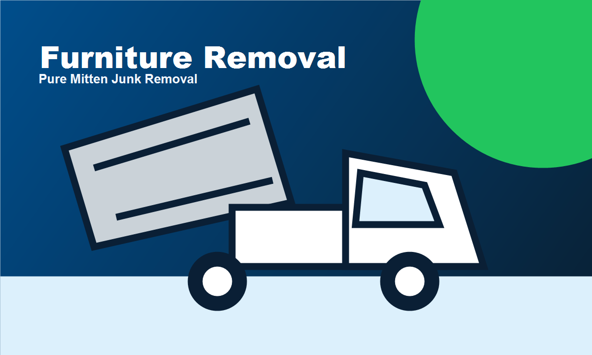

Truck-load junk removal for homes and properties.

Furniture Removal by Pure Mitten
Pure Mitten Junk Removal provides furniture removal for homes, rentals, businesses, and property cleanups across Southeast Michigan. These jobs can be frustrating because the items are often bulky, heavy, dirty, awkward to reach, or too large for normal trash service. Instead of trying to move everything yourself, you can call or text 734-480-8190 or use our quote form to send details and photos. We will help size the job and give you a clear estimate before the work starts.
Our crew handles the hard part: lifting, carrying, loading, hauling, and disposal. We are used to tight corners, stairs, garages packed wall to wall, basement storage areas, older homes, apartment buildings, rental properties, and cleanouts where the pile has been growing for years. If there is anything unusual about access, weight, parking, or timing, include it in your quote request so we can show up prepared.
For furniture removal, pricing usually depends on how much space the items take in the truck, how difficult the material is to handle, and any disposal requirements. We keep that conversation upfront because clear pricing makes the whole job easier. Small pickups may fall under the minimum pickup, while larger projects may be quoted as a quarter load, half load, or full load. Either way, we confirm the number before loading begins.
A big part of good junk removal is respect for the property. We pay attention to walls, floors, doorways, driveways, and surrounding items while we work. We also separate usable items, recyclable material, and disposal loads whenever possible. Some items have to go to the dump, but not every job should be handled like everything belongs in the same place. Responsible removal is part of doing the job right.
People call us for furniture removal during moves, renovations, downsizing, estate projects, landlord turnovers, spring cleaning, garage organization, and last-minute cleanup before guests, buyers, or tenants arrive. We can take one item, several items, or a full pile. If you are not sure whether we can remove something, send a photo. Most of the time, a quick picture tells us what we need to know.
The best next step is simple: fill out the free quote form, upload photos if you have them, or call/text 734-480-8190. We will review the details, help estimate the load size, and schedule a pickup time. Pure Mitten Junk Removal is local, straightforward, and built for customers who want the clutter gone without stress.
Photos

Clean, organized hauling with quote-first service.